소방시설관리사 (2014-05-17 기출문제)
1과목: 방안전관리론
1. 공기 50vol%, 프로판 35vol%, 부탄 12vol%, 메탄 3vol%인 혼합기체의 공기 중 폭발 하한계는 몇 vol% 인가? (단, 공기 중 각 가스의 폭발 하한계는 메탄 5vol%, 프로판 2vol%, 부탄 1.8vol% 이다.)
- 2.02
- 3.41
- 4.04
- 6.82
(정답률: 57%)

2. 화상의 정의와 응급 처치(치료)에 관한 설명으로 옳지 않은 것은?
- 2도 화상은 표재성 화상과 심재성 화상으로 분류된다.
- 3도 화상은 흑색 화상으로 근육, 뼈까지 손상을 입는 탄화 열상이다.
- 1도 화상은 표피손상이며 시원한 물 또는 찬 수건으로 화상 부위를 식힌다.
- 체표면적 10% 이상의 3도 화상은 중증화상에 속한다.
(정답률: 53%)
3. 화재의 분류와 표시색의 연결이 옳은 것은?
- 일반화재(A급) -무색
- 유류화재(B급) -황색
- 전기화재(C급) - 백색
- 금속화재(D급) - 청색
(정답률: 72%)
4. 건축물 화재에 관한 설명으로 옳지 않은 것은?
- 플래쉬오버 현상은 폭풍이나 충격파를 수반하지 않는다.
- 수분함유량이 최소 15% 이상인 경우에는 목재가 고온에 접촉해도 착화되기 어렵다.
- 내화건축물의 온도 -시간 표준곡선에서 화재발생 후 30분이 경과되면 온도는 약 1,000℃ 정도에 달한다.
- 내화건축물은 목조건축물에 비해 연소온도는 낮지만 연소지속시간은 길다.
(정답률: 55%)
5. 축압식 분말 소화기에 관한 설명으로 옳지 않은 것은?
- 충전압력은 0.7∼ 0.98MPa 이다.
- 지시압력계가 적색을 지시하면 과충전 상태이다.
- 지시압력계가 황색을 지시하면 정상 상태이다.
- 소화약제와 불활성 기체를 하나의 용기에 충전시켜 사용한다.
(정답률: 66%)
6. 연소용어에 관한 설명으로 옳지 않은 것은?
- 인화점은 액면에서 증발된 증기의 농도가 그 증기의 연소하한계에 도달한 때의 온도이다.
- 위험도는 연소하한계가 낮고 연소범위가 넓을수록 증가한다.
- 연소점은 연소상태에서 점화원을 제거하여도 자발적으로 연소가 지속되는 온도이다.
- 발화점은 파라핀계탄화수소 화합물의 경우 탄소수가 적을수록 낮아진다.
(정답률: 64%)
7. 연소의 개념과 형태에 관한 설명으로 옳은 것은?
- 폭굉 발생 시 화염전파 속도는 음속보다 느리다.
- 목탄(숯), 코크스, 금속분 등은 분해연소를 한다.
- 기체연료의 연소형태는 확산연소, 예혼합연소, 증발연소가 있다.
- 열가소성 수지는 연소되면서 용융 액면이 넓어져 화재의 확산이 빨라진다.
(정답률: 50%)
8. 포소화약제의 주된 소화원리와 동일한 것은?
- 식용유 화재 시 용기의 뚜껑을 덮어서 소화
- 촛불을 입으로 불어서 소화
- 산불의 진행방향 쪽을 벌목하여 소화
- 전기실 화재에 할로겐화합물 소화약제를 방사하여 소화
(정답률: 74%)
9. 목재 500kg과 종이 박스 300kg이 쌓여 있는 컨테이너(폭: 2.4m, 길이: 6m, 높이:2.4m) 내부의 화재하중(kg/m2)은? (단, 목재의 단위발열량은 18,855 kJ/kg이며, 종이의 단위발열량은 16,760 kJ/kg 이다.)
- 22.18
- 53.24
- 133.10
- 223.08
(정답률: 50%)
10. 가연물의 연소 시 에너지 방출속도를 측정하는 콘 칼로리미터에 관한 설명으로 옳지 않은 것은?
- 기기의 측정요소 중 가연물의 질량 감소를 측정한다.
- 가연물의 연소열에 따라 에너지 방출속도가 다를 수 있다.
- 동일한 가연물일지라도 점화방법, 점화위치에 따라 연소속도가 다를 수 있다.
- 가연물의 연소생성물 중 일산화탄소 농도를 측정하여 에너지 방출속도를 산출한다.
(정답률: 60%)
11. 열전달 형태에 관한 설명으로 옳지 않은 것은?
- 전자기파의 형태로 열이 전달되는 것을 복사라 한다.
- 유체의 흐름에 의하여 열이 전달되는 것을 대류라 한다.
- 전도열량은 면적, 온도차, 열전도율에 비례하고 두께에 반비례한다.
- 전도는 뉴턴의 냉각법칙을 따른다.
(정답률: 68%)
12. 면적 0.8m2의 목재표면에서 연소가 일어날 때 에너지 방출속도(Q)는 몇 kW 인가? (단, 목재의 최대 질량연소유속(m)=11g/m2ㆍs, 기화열(L)=4 kJ/g, 유효 연소열(△Hc)=15 kJ/g이다.)
- 35.2
- 96.8
- 132.0
- 167.2
(정답률: 50%)
13. 구획실 화재(훈소화재는 제외)의 특징으로 옳지 않은 것은?
- 천장의 연기층은 화재의 초기단계보다 성장단계에서 빠르게 축적된다.
- 연기층이 축적되어 개방문의 상부에 도달되면 구획실 밖으로 흘러나가기 시작한다.
- 연기 생성속도가 연기 배출속도를 초과하지 않으면 천장 연기층은 더 이상 하강하지 않는다.
- 화재가 성장하면서 연기층은 축적되지만 연기와 가스의 온도는 더 이상 상승하지 않는다.
(정답률: 70%)
14. PVC가 연소될 때 생성되며, 건물의 철골을 부식시키는 물질은?
- NH3
- HCl
- HCN
- CO
(정답률: 70%)
15. 허용농도(TLV)가 가장 낮은 가스들로 조합된 것은?
- CO, CO2
- HCN, H2S
- COCl2, CH2CHCHO
- C6H6, NH3
(정답률: 43%)
16. 화재안전기준상 연기제어 시스템에 관한 설명으로 옳은 것은?
- 유입풍도안의 풍속은 15m/s 이하로 하여야 한다.
- 예상제연구역에 공기가 유입되는 순간의 풍속은 10m/s 이하가 되도록 한다.
- 배출기의 흡입측 풍도안의 풍속과 배출측 풍속은 각각 20m/s 이하로 하여야 한다.
- 예상제연구역에 대한 공기유입구의 크기는 해당 예상제연구역 배출량 1m2/min에 대하여 35cm2 이상으로 하여야 한다.
(정답률: 42%)
17. 그림에서 연기층 하단의 강하 속도(Vsd)를 구하는 식으로 옳은 것은? (단, 플럼기체의 체적유입속도: vp, 천장면적: Ac, 플럼기체의 밀도: ρp , 연기층 기체의 밀도: ρs이다.)
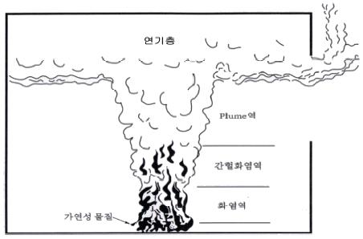
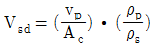
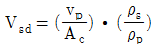
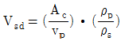
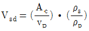
(정답률: 42%)
18. 화재 시 발생하는 연기량과 발연속도에 관한 설명으로 옳지 않은 것은?
- 발연량은 고분자 재료의 종류와는 무관하다.
- 재료의 형상, 산소농도 등에 따라 발연속도는 크게 변한다.
- 목질계보다 플라스틱계 재료의 발연량이 대체적으로 많다.
- 재료의 발연량은 온도나 산소량 등에 크게 영향을 받는다.
(정답률: 50%)
19. 건축물의 방화구조 기준으로 옳은 것을 모두 고른 것은?
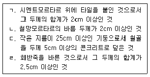
- ㄱ, ㄷ
- ㄴ, ㄹ
- ㄱ, ㄴ, ㄹ
- ㄱ, ㄴ, ㄷ, ㄹ
(정답률: 42%)
20. 다음 중 용어에 관한 설명으로 옳지 않은 것은?
- 을종방화문은 비차열 1시간 이상 성능이 확보되어야 한다.
- 피난층이란 곧바로 지상으로 갈수 있는 출입구가 있는 층을 말한다.
- 무창층의 유효개구부는 도로 또는 차량이 진입할 수 있는 빈터로 향하여야 한다.
- 소방시설이란 소화설비, 경보설비, 피난설비, 소화용수설비, 그 밖에 소화활동설비로서 대통령령으로 정하는 것을 말한다.
(정답률: 66%)
21. 배연전용 수직 샤프트를 설치하여 공기의 온도차 등에 의한 부력과 루프모니터의 흡인력으로 제연하는 방식은?
- 밀폐 제연
- 스모크타워 제연
- 자연 제연
- 기계 제연
(정답률: 65%)
22. 건축물의 내부에 설치하는 피난계단의 구조에 관한 기준으로 옳지 않은 것은?
- 계단실에는 상용전원에 의한 비상조명설비를 할 것
- 계단실의 실내에 접하는 부분의 마감은 불연재료로 할 것
- 계단실의 바깥쪽과 접하는 창문 등은 당해 건축물의 다른 부분에 설치하는 창문 등으로 부터 2m 이상 거리를 두고 설치할 것
- 건축물의 내부에서 계단실로 통하는 출입구의 유효너비는 0.9m 이상으로 할 것
(정답률: 57%)
23. 건축물에 설치하는 방화구획의 기준에 관한 설명으로 옳지 않은 것은?
- 스프링클러 소화설비가 설치된 10층 이하의 층은 바닥면적 3,000m2 이내마다 구획한다.
- 3층 이상의 층과 지하층은 층마다 구획한다.
- 11층 이상의 층은 바닥면적 600m2 이내마다 구획한다.
- 벽 및 반자의 실내에 접하는 부분의 마감이 불연재료이고 스프링클러 소화설비가 설치된 11층 이상의 층은 1,500m2 이내마다 구획한다.
(정답률: 47%)
24. 건축물 화재에 대응한 피난계획의 일반적 원칙으로 옳지 않은 것은?
- 2개 방향의 피난동선을 상시 확보한다.
- 피난수단은 전자기기나 기계장치로 조작하여 작동하는 것을 우선한다.
- 피난경로에 따라서 일정한 구획을 한정하여 피난구역을 설정한다.
- ‘fool proof’와 ‘fail safe’의 원칙을 중시한다.
(정답률: 68%)
25. 다음은 화재 시 인간의 피난특성에 관한 설명이다. ( )안에 들어갈 내용을순서대로 나열한 것은?
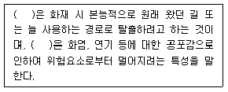
- 귀소본능, 지광본능
- 지광본능, 추종본능
- 귀소본능, 퇴피본능
- 추종본능, 퇴피본능
(정답률: 66%)
2과목: 소방수리학·약제화학 및 소방전
26. 엔트로피(Entropy)에 관한 설명으로 옳지 않은 것은?
- 등엔트로피 과정은 정압 가역과정이다.
- 가역과정에서 엔트로피는 0 이다.
- 비가역과정에서 엔트로피는 증가한다.
- 계가 가역적으로 흡수한 열량을 그 때의 절대온도로 나눈 값이다.
(정답률: 44%)
27. 동일한 고도에서 베르누이 방정식을 만족하는 유동이 유선을 따라 흐를 때, 유선내에서 일정한 값을 갖는 것은?
- 전압과 정체압
- 정압과 국소압력
- 내부에너지
- 동압과 속도압력
(정답률: 37%)
28. 4단 소화펌프가 정격유량 2m3/min, 회전수 2,000rpm, 양정 60m일 경우 비속도는 약 얼마인가?
- 351
- 361
- 371
- 381
(정답률: 47%)
29. 레이놀즈수에 관한 설명으로 옳은 것은?
- 등속류와 비등속류를 구분하는 기준이 된다.
- 레이놀즈수의 물리적 의미는 관성력과 점성력의 관계를 나타낸다.
- 정상류와 비정상류를 구분하는 기준이 된다.
- 하임계 레이놀즈수는 층류에서 난류로 변할 때의 레이놀즈수이다.
(정답률: 49%)
30. 압축공기용 탱크 내부의 온도는 20℃이고, 계기압력은 345kPa이다. 이때 이상기체의 가정 하에 탱크 내에 공기의 밀도는 약 몇 kg/m3 인가? (단, 대기압은 101.3kPa, 공기의 기체상수는 286.9J/kgㆍ이다.)
- 0.08
- 4.10
- 5.31
- 77.78
(정답률: 40%)
31. 소화설비 배관 직경이 300mm에서 450mm로 급격하게 확대되었을 때 작은 배관에서 큰 배관 쪽으로 분당 13.8m3의 소화수를 보내면 연결부에서 발생하는 손실수두는 약 몇 m 인가? (단, 중력가속도는 9.8m/s2 이다.)
- 0.17
- 0.87
- 1.67
- 2.17
(정답률: 40%)
32. 개방된 큰 탱크의 바닥에 있는 오리피스로부터 물이 8m/s의 속도로 흘러나올 때의 탱크 내 물의 높이는 약 몇 m 인가? (단, 유체의 점성효과는 무시되며, 중력가속도는 9.8m/s2 이다.)
- 0.27
- 1.27
- 2.27
- 3.27
(정답률: 54%)
33. 소화배관에 연결된 노즐의 방수량은 150ℓ/min, 방수압력은 0.25MPa 이다.이 노즐의 방수량을 200ℓ/min로 증가시킬 경우 방수압력은 약 몇 MPa 인가?
- 0.24
- 0.44
- 4.44
- 5.44
(정답률: 49%)
34. 일반화재, 유류화재, 전기화재에 모두 적응성이 있는 분말소화약제의 종류와 주성분의 연결로 옳은 것은?
- 제2종 분말소화약제 - NaHCO3
- 제2종 분말소화약제 - (NH2)2CO
- 제3종 분말소화약제 - NH4H2PO4
- 제3종 분말소화약제 - Na2CO3
(정답률: 67%)
35. 다음 중 부촉매효과가 없는 소화약제는?
- Halon 1301 소화약제
- 제1종 분말소화약제
- HFC-125 청정소화약제
- IG-100 청정소화약제
(정답률: 38%)
36. 화재안전기준상 청정소화약제별 최대허용설계농도(%)로 옳지 않은 것은?
- HFC-227ea : 10.5%
- HCFC BLEND A : 10%
- FK-5-1-12 : 15%
- IG-55 : 43%
(정답률: 63%)
37. 탄화칼슘(CaC2) 화재 시 가장 적합한 소화방법은?
- 물을 주수하여 냉각 소화한다.
- 이산화탄소를 방사하여 질식 소화한다.
- 마른모래로 질식 소화한다.
- 할로겐화합물 약제를 사용하여 부촉매 소화한다.
(정답률: 63%)
38. 다음 중 물소화약제에 관한 설명으로 옳지 않은 것은?
- 침투제를 사용하여 물의 표면장력을 증가시키면 심부화재에 적용 가능하다.
- 다른 소화약제에 비해 비열 및 기화열이 크다.
- 무상주수를 통해 질식, 냉각이 가능하다.
- 희석소화를 통해 수용성 가연물질 화재에 적용 가능하다.
(정답률: 54%)
39. 화재안전기준상 청정소화약제인 IG-541의 혼합가스 체적 성분비는?
- N2 50[%], Ar 40[%], CO 10[%]
- N2 52[%], Ar 40[%], CO2 8[%]
- CO2 50[%], Ar 40[%], N2 10[%]
- CO2 52[%], Ar 40[%], N2 8[%]
(정답률: 58%)
40. 납축전지의 전해액으로 옳은 것은?
- Cd(OH)2
- H2SO4
- PbSO4
- MnO2
(정답률: 50%)
41. 전류가 흐르는 도체 주위의 자계 방향을 결정하는 법칙은?
- 패러데이의 법칙
- 렌츠의 법칙
- 플레밍의 오른손 법칙
- 암페어의 오른나사 법칙
(정답률: 38%)
42. 다음 왜형파 전압의 왜형률은 약 얼마인가?
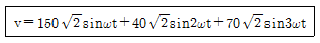
- 0.45
- 0.54
- 0.67
- 0.85
(정답률: 33%)
43. 다음 피드백제어계 블록선도의 전달함수는?
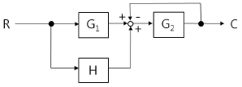
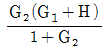
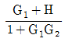
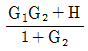
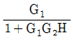
(정답률: 41%)
44. 정격용량 1,000kVA, 발전기 과도 리액턴스 0.2 인 자가발전기의 차단기 용량 (kVA)은?
- 5,230
- 5,720
- 6,250
- 6,830
(정답률: 33%)
45. 인덕턴스가 각각 L1=5H, L2=10H 인 두 코일을 그림과 같이 연결하고 합성 인덕턴스를 측정하였더니 5H이였다. 두 코일간의 상호인덕턴스 M(H)은?
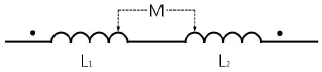
- 2
- 3
- 4
- 5
(정답률: 52%)
46. 60Hz인 교류 전압을 인가할 때, 유도성 리액턴스가 3.77Ω이라면 인덕턴스는 약 몇 mH 인가?
- 0.1
- 1
- 10
- 100
(정답률: 47%)
47. 교류전압만을 측정할 수 있는 계기는?
- 유도형계기
- 가동코일형계기
- 정전형계기
- 열선형계기
(정답률: 34%)
48. 역방향 전압영역에서 동작하고 전원전압을 일정하게 유지하기 위하여 사용되는 다이오드는?
- 발광다이오드
- 터널다이오드
- 포토다이오드
- 제너다이오드
(정답률: 57%)
49. 평행판 콘덴서의 면적을 4배 증가시키고, 간격은 2배 감소시켰다면 콘덴서의 정전용량은 처음의 몇 배인가?
- 2
- 3
- 4
- 8
(정답률: 41%)
50. 2㎌ 콘덴서를 3kV로 충전하면 저장되는 에너지는 몇 J 인가?
- 6
- 9
- 12
- 15
(정답률: 45%)
3과목: 소방관련법령
51. 소방기본법령상 소방자동차의 우선 통행 등과 소방대의 긴급통행에 관한 설명으로 옳지 않은 것은?
- 소방자동차의 우선 통행에 관해서는 소방기본법시행령에 정한 바에 따른다.
- 모든 차와 사람은 소방자동차가 화재진압을 위해 출동할 때에는 이를 방해하여서는 아니 된다.
- 소방자동차가 훈련을 위하여 필요한 때에는 사이렌을 사용할 수 있다.
- 소방대는 화재현장에 신속하게 출동하기 위하여 긴급할 때에는 일반적인 통행에 쓰이지 아니하는 도로ㆍ빈터 또는 물 위로 통행할 수 있다.
(정답률: 60%)
52. 소방기본법령상 특수가연물에 관한 설명으로 옳은 것은?
- 100킬로그램 이상의 면화류는 특수가연물로 분류된다.
- 800킬로그램 이상의 사류(絲類)는 특수가연물로 분류된다.
- 특수가연물을 저장 또는 취급하는 장소에는 품명ㆍ최대수량 및 화기취급의 금지표지를 설치해야 한다.
- 합성수지류에는 합성수지의 섬유ㆍ옷감ㆍ종이 및 실과 이들의 넝마와 부스러기가 포함된다.
(정답률: 61%)
53. 소방기본법을 위반하여 벌금에 처해지는 자는?
- 화재경계지구 안의 소방대상물에 대한 소방특별조사를 거부ㆍ방해 또는 기피한 자
- 특수가연물의 저장 및 취급 기준을 위반한 자
- 화재경계지구에 대한 소방용수시설의 설치 명령을 위반한 자
- 시장지역에서 화재로 오인할 우려가 있는 연막소독을 하면서 관할소방서장에게 신고를 하지 아니하여 소방자동차를 출동하게 한 자
(정답률: 54%)
54. 소방기본법령상 화재경계지구의 지정에 관한 설명으로 옳지 않은 것은?
- 시ㆍ도지사는 도시의 건물 밀집지역 등 화재의 우려가 높거나 화재가 발생하는 경우로 인하여 피해가 클 것으로 예상되는 목조건물이 밀집한 지역을 화재경계지구로 지정할 수 있다.
- 시ㆍ도지사는 화재경계지구 안의 소방대상물의 위치ㆍ구조 및 설비 등에 대한 소방특별조사를 분기별 1회 이상 실시하여야 한다.
- 소방본부장 또는 소방서장은 화재경계지구 안의 관계인에 대하여 소방상 필요한 훈련 및 교육을 연 1회 이상 실시할 수 있다.
- 소방본부장 또는 소방서장은 소방특별조사를 한 결과 화재의 예방과 경계를 위하여 필요하다고 인정할 때에는 관계인에게 소방용수시설, 소화기구, 그 밖에 소방에 필요한 설비의 설치를 명할 수 있다.
(정답률: 56%)
55. 소방시설공사업법령상 중앙 소방기술 심의위원회의 심의사항에 해당하지 않는 것은?
- 소방시설의 구조 및 원리 등에서 공법이 특수한 설계 및 시공에 관한 사항
- 소방시설의 설계 및 공사감리의 방법에 관한 사항
- 새로운 소방시설과 소방용품 등의 도입 여부에 관한 사항
- 소방시설에 하자가 있는지의 판단에 관한 사항
(정답률: 58%)
56. 소방시설공사업법령상 소방시설업의 등록을 반드시 취소해야 하는 경우에 해당하지 않는 것은?
- 거짓이나 그 밖의 부정한 방법으로 등록한 경우
- 법인의 대표자가 위험물안전관리법에 따른 금고 이상의 형의 집행유예를 선고받고 그 유예기간 중에 있어서 등록의 결격사유에 해당하는 경우
- 등록을 한 후 정당한 사유 없이 1년이 지날 때까지 영업을 시작하지 아니한 때의 경우
- 영업정지처분을 받고 영업정지기간 중에 새로운 설계ㆍ시공 또는 감리를 한 경우
(정답률: 56%)
57. 소방시설공사업법령상 하자보수 보증기간이 다른 소방시설은?
- 피난기구
- 유도등
- 무선통신보조설비
- 옥외소화전설비
(정답률: 52%)
58. 소방시설 설치ㆍ유지 및 안전관리에 관한 법령상 소방시설등의 자체 점검 중 종합정밀점검에 관한 설명으로 옳지 않은 것은?
- 소방본부장이 소방안전관리가 우수하다고 인정한 특정소방대상물에 대해서는 3년의 범위에서 종합정밀점검을 면제한다.
- 연면적이 5,000m2이고, 15층인 아파트는 종합정밀점검 실시대상에 해당되지 않는다.
- 특급 소방안전관리대상물의 경우 종합정밀점검의 점검횟수는 반기에 1회 이상 실시한다.
- 소방시설완공검사필증을 발급받은 신축 건축물을 제외한 건축물의 종합정밀점검은 건축물 사용승인일이 속하는 달까지 실시한다.
(정답률: 31%)
59. 소방시설 설치ㆍ유지 및 안전관리에 관한 법령상 지하가 중 터널인 경우 길이가 얼마 이상일 때 연결송수관설비를 설치하여야 하는가?
- 500m
- 1천m
- 2천m
- 3천m
(정답률: 52%)
60. 소방시설 설치ㆍ유지 및 안전관리에 관한 법령상 건축허가등의 동의에 관한 설명으로 옳지 않은 것은?
- 건축허가등의 권한이 있는 행정기관은 건축허가 등을 할 때 미리 그 건축물등의 시공지 또는 소재지를 관할하는 소방본부장이나 소방서장의 동의를 받아야 한다.
- 건축물 등의 사용승인에 대한 동의를 할 때에는 소방시설공사업법에 따른 소방시설공사의 완공검사증명서를 교부하는 것으로 동의를 갈음할 수 있다.
- 건축허가등의 동의를 요구한 기관이 그 건축허가등을 취소하였을 때에는 취소한 날부터 7일 이내에 건축물 등의 시공지 또는 소재지를 관할하는 소방본부장 또는 소방서장에게 그 사실을 통보하여야 한다.
- 건축물 등의 대수선 신고를 수리할 권한이 있는 행정기관은 그 신고를 수리하면 그 건축물 등의 시공지 또는 소재지를 관할하는 소방본부장이나 소방서장에게 수리한 날로부터 10일 이내에 그 사실을 알려야 한다.
(정답률: 55%)
61. 소방시설 설치ㆍ유지 및 안전관리에 관한 법령상 방염성능기준 이상의 실내장식물 등을 설치하여야 하는 특정소방대상물이 아닌 것은?
- 숙박이 가능한 수련시설
- 근린생활시설 중 체력단련장
- 의료시설 중 종합병원
- 방송통신시설 중 촬영소 및 전신전화국
(정답률: 43%)
62. 소방시설 설치ㆍ유지 및 안전관리에 관한 법령상 소방안전관리자를 두어야 하는 특정소방대상물에 관한 설명으로 옳은 것은? (단, 공공기관의 소방안전관리에 관한 규정을 적용받는 특정소방대상물은 제외)
- 층수에 상관없이 지상으로부터 높이가 100미터 이상인 것은 특급 소방안전관리대상물이다.
- 지하구는 2급 소방안전관리대상물이다.
- 가연성가스를 1천톤 이상 저장ㆍ취급하는 시설은 2급 소방안전관리대상물이다.
- 층수가 21층인 아파트는 1급 소방안전관리대상물이다.
(정답률: 49%)
63. 소방시설 설치ㆍ유지 및 안전관리에 관한 법령상 소방시설관리사에 관한 설명으로 옳은 것은?
- 소방시설관리사는 동시에 둘 이상의 업체에 취업할 수 있다.
- 소방시설관리사증을 다른 자에게 빌려준 경우에는 소방시설관리사 자격을 정지 또는 취소할 수 있다.
- 소방시설관리사의 자격이 취소된 날부터 2년이 지나지 아니한 사람은 소방시설관리사가 될 수 없다.
- 소방방재청장은 시험에서 부정한 행위를 한 응시자에 대하여는 그 시험을 정지 또는 무효로 하고, 그 처분이 있은 날부터 3년간 시험 응시자격을 정지한다.
(정답률: 39%)
64. 소방시설 설치ㆍ유지 및 안전관리에 관한 법령상 소방방재청장이 시ㆍ도지사에게 위임한 업무는?
- 소방안전관리에 대한 교육업무
- 소방용품의 성능인증업무
- 소방용품에 대한 우수품질인증업무
- 우수 소방대상물의 선정, 표지 발급 및 관계인에 대한 포상업무
(정답률: 52%)
65. 소방시설 설치ㆍ유지 및 안전관리에 관한 법령상 소방용품의 품질관리 등에 관한 설명으로 옳지 않은 것은?
- 소방방재청장은 제조자 또는 수입자의 소방용품에 대하여는 성능인증을 하여야 한다.
- 누구든지 형식승인을 받지 아니한 소방용품을 판매 목적으로 진열할 수 없다.
- 누전경보기 및 가스누설경보기를 제조하거나 수입하려는 자는 형식승인을 받아야 한다.
- 소방방재청장은 소방용품의 품질관리를 위하여 필요하다고 인정할 때에는 유통 중인 소방용품을 수집하여 검사할 수 있다.
(정답률: 46%)
66. 소방시설 설치ㆍ유지 및 안전관리에 관한 법령상 과태료의 부과대상인 자는?
- 소방안전관리자를 선임하지 아니한 자
- 소방안전관리자에게 불이익한 처우를 한 관계인
- 방염성능기준 미만으로 방염처리한 자
- 소방특별조사를 정당한 사유 없이 거부ㆍ방해 또는 기피한 자
(정답률: 30%)
67. 소방시설 설치ㆍ유지 및 안전관리에 관한 법령상 특정소방대상물 중 근린생활 시설에 해당하는 것은?
- 유흥주점
- 마약진료소
- 같은 건축물에 해당 용도로 쓰는 바닥면적의 합계가 300제곱미터인 골프연습장
- 같은 건축물에 해당 용도로 쓰는 바닥면적의 합계가 500제곱미터인 운전학원
(정답률: 52%)
68. 다음은 위험물안전관리법상 위험물시설의 설치 및 변경에 관한 내용이다. ( )안에 들어갈 내용으로 옳은 것은?(관련 규정 개정전 문제로 여기서는 기존 정답인 2번을 누르면 정답 처리됩니다. 자세한 내용은 해설을 참고하세요.)
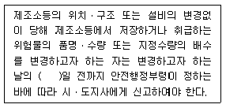
- 5
- 7
- 10
- 14
(정답률: 51%)
69. 위험물안전관리법에 관한 설명으로 옳은 것은?
- 위험물이라 함은 인화성 또는 발화성 등의 성질을 가지는 것으로서 안전행정부령으로 정하는 물품을 말한다.
- 지정수량이라 함은 위험물의 종류별로 위험성을 고려하여 안전행정부령으로 정하는 수량을 말한다.
- 지정수량 미만인 위험물의 저장 또는 취급에 관한 기술상의 기준은 안전행정부령으로 정한다.
- 위험물안전관리법은 철도 및 궤도에 의한 위험물의 저장ㆍ취급 및 운반에 있어서는 이를 적용하지 아니한다.
(정답률: 51%)
70. 위험물안전관리법령상 위험물의 안전관리와 관련된 업무를 수행하는 자로서 안전교육대상자로 명시된 자를 모두 고른 것은?
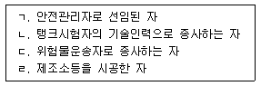
- ㄱ
- ㄱ, ㄴ
- ㄱ, ㄴ, ㄷ
- ㄱ, ㄴ, ㄷ, ㄹ
(정답률: 56%)
71. 위험물안전관리법령상 제조소에서 취급하는 제4류 위험물의 최대수량의 합이 지정수량의 12만배 이상 24만배 미만인 사업소의 경우 자체소방대에 두는 화학소방자동차 대수와 자체소방대원 수로 옳은 것은? (단, 다른 사업소 등과 상호응원 협정은 없음)
- 1대 - 5인
- 2대 - 10인
- 3대 - 15인
- 4대 - 20인
(정답률: 55%)
72. 다중이용업소의 안전관리에 관한 특별법상 다중이용업소의 안전관리기본계획의 수립권자는?
- 안전행정부장관
- 소방방재청장
- 시ㆍ도지사
- 소방본부장
(정답률: 49%)
73. 다중이용업소의 안전관리에 관한 특별법령상 이행강제금을 부과하는 경우는?
- 다중이용업소의 사용금지 또는 제한 명령을 위반한 경우
- 소방안전교육을 받지 않거나 종업원이 소방안전교육을 받도록 하지 않은 경우
- 정기점검결과서를 보관하지 않은 경우
- 화재배상책임보험에 가입하지 않은 경우
(정답률: 46%)
74. 다중이용업주의 안전시설등에 대한 정기점검에 관한 설명으로 옳은 것은?
- 다중이용업주는 다중이용업소의 안전관리를 위하여 정기적으로 안전시설등을 점검하고 그 점검결과서를 1년간 보관하여야 한다.
- 자체점검을 한 경우 이외에는 매년 1회 이상 점검해야 한다.
- 다중이용업주는 정기점검을 직접 수행할 수 없다.
- 다중이용업소의 종업원인 경우에는 국가기술자격법에 따라 소방기술사의 자격을 보유하였더라도 안전점검자의 자격은 없다.
(정답률: 50%)
75. 다중이용업소의 안전관리에 관한 특별법령상 다중이용업주의 화재배상책임보험가입등에 관한 설명으로 옳지 않은 것은?
- 다중이용업주는 다중이용업주의 성명을 변경한 경우에는 화재배상책임보험에 가입한 후 그 증명서를 소방본부장 또는 소방서장에게 제출하여야 한다.
- 보험회사는 화재배상책임보험의 보험금 청구를 받은 때에는 청구 받은 날로부터 14일이내에 피해자에게 보험금을 지급하여야 한다.
- 다중이용업주가 화재배상책임보험 청약 당시 보험회사가 요청한 안전시설등의 유지ㆍ관리에 관한 사항 등을 거짓으로 알리는 경우 보험회사는 계약을 거절할 수 있다.
- 소방서장은 다중이용업주가 화재배상책임보험에 가입하지 아니하였을 때에는 허가 관청에 다중이용업주에 대한 영업의 정지 등 필요한 조치를 취할 것을 요청할 수 있다.
(정답률: 43%)
4과목: 위험물의 성상 및 시설기준
76. 염소산칼륨(KClO3)에 관한 설명으로 옳지 않은 것은?
- 냉수, 알코올에 잘 녹는다.
- 무색 결정으로 인체에 유독하다.
- 황산과 접촉으로 격렬하게 반응하여 ClO2를 발생한다.
- 적린과 혼합하면 가열ㆍ충격ㆍ마찰에 의해 폭발할 수 있다.
(정답률: 50%)
77. 위험물의 유별 분류 및 지정수량이 옳지 않은 것은?
- 염소화이소시아눌산 - 제1류 - 300kg
- 염소화규소화합물 - 제3류 - 300kg
- 금속의 아지화합물 - 제5류 - 300kg
- 할로겐간화합물 - 제6류 - 300kg
(정답률: 29%)
78. 제2류 위험물에 관한 설명으로 옳지 않은 것은?
- 금속분, 마그네슘은 위험등급 I 에 해당한다.
- 인화성고체인 고형알코올은 지정수량이 1,000kg 이다.
- 철분, 알루미늄분은 염산과 반응하여 수소가스를 발생한다.
- 적린, 유황의 화재 시에는 물을 이용한 냉각소화가 가능하다.
(정답률: 56%)
79. 위험물안전관리법령상 위험물에 해당하는 것은?
- 황가루와 활석가루가 각각 50kg씩 혼합된 물질
- 아연분말 100kg 중 150㎛의 체를 통과한 것이 60kg인 것
- 철분 500kg 중 53㎛의 표준체를 통과한 것이 200kg인 것
- 구리분말 300kg 중 150㎛의 체를 통과한 것이 200kg인 것
(정답률: 38%)
80. 물과 반응하여 메탄(CH4) 가스를 발생하는 위험물은?
- 인화칼슘
- 탄화알루미늄
- 수소화리튬
- 탄화칼슘
(정답률: 53%)
81. ANFO 폭약의 원료로 사용되는 물질로 조해성이 있고 물에 녹을 때 흡열반응을 하는 것은?
- 질산칼륨
- 질산칼슘
- 질산나트륨
- 질산암모늄
(정답률: 58%)
82. 제3류 위험물에 관한 설명으로 옳지 않은 것은?
- 황린은 공기와 접촉하면 자연발화할 수 있다.
- 칼륨, 나트륨은 등유, 경유 등에 넣어 보관한다.
- 지정수량 1/10을 초과하여 운반하는 경우, 제4류 위험물과 혼재할 수 없다.
- 알킬알루미늄은 운반용기 내용적의 90 % 이하로 수납하여야 한다.
(정답률: 60%)
83. 다음 위험물 중 물에 잘 녹는 것은?
- 벤젠
- 아세톤
- 가솔린
- 톨루엔
(정답률: 57%)
84. 제5류 위험물에 관한 설명으로 옳지 않은 것은?
- 불티ㆍ불꽃ㆍ고온체와의 접근이나 과열ㆍ충격 또는 마찰을 피해야 한다.
- 제조소의 게시판에 표시하는 주의사항은 “충격주의”이며 적색바탕에 백색문자로 기재한다.
- 운반용기의 외부에 표시하는 주의사항은 “화기엄금” 및 “충격주의”이다.
- 유기과산화물, 니트로화합물과 같은 자기반응성 물질은 제5류 위험물에 해당된다.
(정답률: 62%)
85. 제6류 위험물에 관한 설명으로 옳은 것은?
- 옥내저장소 저장창고의 바닥면적은 2,000m2 까지 할 수 있다.
- 과산화수소는 비중이 1.49 이상인 것에 한하여 위험물로 규제한다.
- 지정수량의 5배 이상을 취급하는 제조소에는 피뢰침을 설치하여야 한다.
- 제조소 건축물의 창 및 출입구에 유리를 이용하는 경우에는 망입유리로 하여야 한다.
(정답률: 54%)
86. 디에틸에테르에 10 %-요오드화칼륨(KI) 용액을 첨가하였을 때 어떤 색상으로 변화하면 디에틸에테르 속에 과산화물이 생성되었다고 판정할 수 있는가?
- 황색
- 청색
- 백색
- 흑색
(정답률: 64%)
87. 제6류 위험물의 성상 및 위험성에 관한 설명으로 옳지 않은 것은?
- BrF3는 자극적인 냄새가 나는 산화제이다.
- HNO3는 유독성이 있는 부식성 액체이며 가열하면 적갈색의 NO2를 발생한다.
- HClO4는 자극적인 냄새가 나는 무색 액체이며 물과 접촉하면 흡열반응을 한다.
- BrF5는 산과 반응하여 부식성 가스를 발생하고 물과 접촉하면 폭발 위험성이 있다.
(정답률: 48%)
88. 위험물안전관리법령상 제조소의 안전거리 규정에 관한 설명으로 옳지 않은 것은?
- 고등교육법에서 정하는 학교는 수용인원에 관계없이 30m 이상 이격하여야 한다.
- 영유아보육법에 의한 어린이집이 20명의 인원을 수용하는 경우는 30m 이상 이격하여야 한다.
- 공연법에 의한 공연장이 300명의 인원을 수용하는 경우는 10m 이상 이격하여야 한다.
- 노인복지법에 의한 노인복지시설이 20명의 인원을 수용하는 경우는 30m 이상 이격하여야 한다.
(정답률: 58%)
89. 위험물안전관리법령상 제조소의 환기설비 시설기준에 관한 설명으로 옳지 않은 것은?
- 급기구는 해당 급기구가 설치된 실의 바닥면적 150m2 마다 1개 이상으로 하여야 한다.
- 환기구는 지붕 위 또는 지상 1m 이상의 높이에 설치하여야 한다.
- 바닥면적이 120m2 인 경우, 급기구의 크기를 600cm2 이상으로 하여야 한다.
- 급기구는 낮은 곳에 설치하고 가는 눈의 구리망 등으로 인화방지망을 설치하여야 한다.
(정답률: 48%)
90. 위험물안전관리법령상 팽창진주암(삽 1개 포함)의 1.0 능력단위에 해당하는 용량으로 옳은 것은?
- 50ℓ
- 80ℓ
- 100ℓ
- 160ℓ
(정답률: 58%)
91. 위험물안전관리법령상 제조소등의 시설 중 각종 턱에 관한 기준으로 옳지 않은 것은?
- 액체위험물을 취급하는 제조소의 옥외설비는 바닥의 둘레에 높이 0.15m 이상의 턱을 설치하여야 한다.
- 판매취급소에서 위험물을 배합하는 실의 출입구 문턱 높이는 바닥 면으로부터 0.⑤m 이상이어야 한다.
- 옥외탱크저장소에서 옥외저장탱크 펌프실의 바닥 주위에는 높이 0.2m 이상의 턱을 만들어야 한다.
- 주유취급소의 펌프실 출입구에는 바닥으로부터 0.1m 이상의 턱을 설치하여야 한다.
(정답률: 60%)
92. 위험물안전관리법령상 제조소 내의 위험물을 취급하는 배관을 강관 이외의 재질로 하는 경우 사용할 수 없는 것은?
- 폴리프로필렌
- 폴리우레탄
- 고밀도폴리에틸렌
- 유리섬유강화플라스틱
(정답률: 30%)
93. 위험물안전관리법령상 제조소 옥외설비 바닥의 집유설비에 유분리장치를 설치해야 하는 액체위험물의 용해도 기준으로 옳은 것은?
- 15℃의 물 100 g에 용해되는 양이 0.1g 미만인 것
- 15℃의 물 100 g에 용해되는 양이 1g 미만인 것
- 20℃의 물 100 g에 용해되는 양이 0.1g 미만인 것
- 20℃의 물 100 g에 용해되는 양이 1g 미만인 것
(정답률: 45%)
94. 위험물안전관리법령상 위험물의 운송 및 운반에 관한 설명으로 옳지 않은 것은?
- 지정수량 이상을 운송하는 차량은 운행 전 관할소방서에 신고하여야 한다.
- 알킬리튬은 운송책임자의 감독 또는 지원을 받아 운송을 하여야 한다.
- 제3류 위험물 중 금수성 물질은 적재 시 방수성이 있는 피복으로 덮어야 한다.
- 위험물은 운반용기의 외부에 위험물의 품명, 수량, 주의사항 등을 표시하여 적재하여야한다.
(정답률: 55%)
95. 위험물안전관리법령상 옥내탱크저장소의 탱크전용실을 단층건물 외의 건축물에 설치할 수 없는 위험물은?
- 적린
- 칼륨
- 경유
- 질산
(정답률: 52%)
96. 위험물안전관리법령상 옥내저장소의 지붕 또는 천장에 관한 설명으로 옳지 않은 것은?
- 황린만 저장하는 경우에는 지붕을 내화구조로 할 수 있다.
- 셀룰로이드만 저장하는 경우에는 불연재료로 된 천장을 설치할 수 있다.
- 할로겐간화합물만 저장하는 경우에는 지붕을 내화구조로 할 수 있다.
- 피크린산만 저장하는 경우에는 난연재료로 된 천장을 설치할 수 있다.
(정답률: 27%)
97. 위험물안전관리법령상 제조소 건축물의 외벽이 내화구조인 경우 2 소요단위에 해당하는 연면적은?
- 100m2
- 150m2
- 200m2
- 300m2
(정답률: 42%)
98. 위험물안전관리법령상 이송취급소에 해당하지 않는 것을 모두 고른 것은?
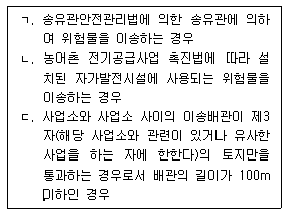
- ㄱ, ㄴ
- ㄴ, ㄷ
- ㄱ, ㄷ
- ㄱ, ㄴ, ㄷ
(정답률: 34%)
99. 위험물안전관리법령상 주유취급소의 담 또는 벽의 일부분에 부착할 수 있는 방화상 유효한 유리는 하나의 유리판의 가로 길이가 몇 m 이내 이어야 하는가?
- 0.5
- 1.0
- 1.5
- 2.0
(정답률: 51%)
100. 위험물안전관리법령상 이동탱크저장소의 기준 중 이동저장탱크에 설치하는 강철판으로 된 칸막이, 방파판, 방호틀 각각의 최소 두께를 합한 값은?
- 4.8mm
- 6.9mm
- 7.1mm
- 9.6mm
(정답률: 48%)
5과목: 소방시설의 구조원리
101. 화재안전기준상 전기실 및 전산실에 적응성이 있는 소화기구의 소화약제는
- 포소화약제
- 강화액소화약제
- 청정소화약제
- 산알칼리소화약제
(정답률: 64%)
102. 다음은 옥내소화전설비의 화재안전기준에 관한 내용이다. ( )안에 들어갈 내용이 순서대로 옳은 것은?
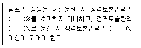
- 140, 65, 150
- 140, 150, 65
- 150, 65, 140
- 150, 140, 65
(정답률: 63%)
103. 옥내소화전이 지상 29층에 2개, 지상 30층에 3개 설치되어 있는 지상 40층인 건축물에서 화재안전기준상 수원의 최소용량(m3)은? (단, 옥상수원 제외)
- 7.8
- 15.6
- 23.4
- 39.0
(정답률: 50%)
104. 옥외소화전설비의 화재안전기준에 관한 설명으로 옳지 않은 것은?
- 노즐선단에서의 방수압력은 0.25MPa 이상이고, 방수량이 350ℓ/min 이상이어야 한다.
- 수원은 설치개수(옥외소화전이 2개 이상 설치된 경우에는 2개)에 7m3를 곱한 양이상으로 한다.
- 옥외소화전이 10개 이하 설치된 때에는 소화전 3개마다 1개 이상의 소화전함을 설치하여야 한다.
- 호스접결구는 특정소방대상물의 각 부분으로부터 하나의 호스접결구까지의 수평거리가 40m 이하가 되도록 설치하고 호스구경은 65mm의 것으로 하여야 한다.
(정답률: 53%)
1⑤. 화재조기진압용 스프링클러설비의 화재안전기준에 관한 설명으로 옳지 않은 것은?
- 헤드 하나의 방호면적은 6.0m2 이상 9.3m2 이하로 한다.
- 교차배관은 가지배관 밑에 설치하고, 그 구경은 최소 40mm 이상으로 한다.
- 하향식 헤드의 반사판의 위치는 천장이나 반자 아래 125mm 이상 355mm 이하로 한다.
- 천장의 높이가 9.1m 이상 13.7m 이하인 경우 가지배관 사이의 거리는 2.4m 이상 3.7m 이하로 한다.
(정답률: 42%)
106. 물분무소화설비의 화재안전기준에 관한 설명으로 옳지 않은 것은?
- 220kV 초과 275kV 이하인 전압의 전기기기가 있는 장소에 있어서는 전기기기와 물분무헤드 사이에 210cm 이상 거리를 두어야 한다.
- 물분무소화설비를 설치하는 차고 또는 주차장의 배수구에는 새어나온 기름을 모아 소화할수 있도록 길이 40m 이하마다 집수관ㆍ소화핏트 등 기름분리장치를 설치하여야 한다.
- 수원은 절연유 봉입 변압기에 있어서 바닥부분을 제외한 표면적을 합한 면적 1m2에 대하여 10ℓ/min로 20분간 방수할 수 있는 양 이상으로 하여야 한다.
- 운전시에 표면의 온도가 260℃ 이상으로 되는 등 직접 분무를 하는 경우 그 부분에 손상을 입힐 우려가 있는 기계장치 등이 있는 장소에는 물분무헤드를 설치하지 아니할수 있다.
(정답률: 62%)
107. 바닥면적 300m2인 주차장에 호스릴포소화설비를 설치하는 경우 화재안전기준상 포소화약제의 최소저장량(ℓ)은? (단, 호스접결구는 8개, 약제의 사용농도는 3%이다.)
- 800
- 900
- 1,000
- 1,100
(정답률: 44%)
108. 이산화탄소소화설비의 화재안전기준에 관한 설명으로 옳은 것은?
- 저압식 저장용기의 충전비는 1.5 이상 1.9 이하로 한다.
- 소화약제의 저장용기는 온도가 50℃ 이하인 곳에 설치한다.
- 셀룰로이드제품 등 자기연소성물질을 저장ㆍ취급하는 장소에는 분사헤드를 설치하여야한다.
- 음향경보장치는 소화약제의 방사개시 후 1분 이상 경보를 계속할 수 있는 것으로 설치하여야 한다.
(정답률: 56%)
109. 화재시 연소면이 1면에 한정되고 가연물이 비산할 우려가 없는 표면적 100m2인 방호대상물에 국소방출방식 할로겐화합물 소화약제를 적용할 경우, 할론 1301의 최소저장량(kg)은?
- 748
- 850
- 950
- 968
(정답률: 40%)
110. 청정소화약제소화설비의 화재안전기준상 A급화재 소화농도가 30%일 경우 사람이 상주하는 곳에 사용이 가능한 소화약제는?
- FC-3-1-10
- HCFC-124
- HFC-125
- HFC-236fa
(정답률: 53%)
111. 분말소화약제의 화재안전기준상 소화약제 1kg당 저장용기의 내용적(ℓ)으로 옳은 것은?
- 제1종 분말: 0.8
- 제2종 분말: 0.9
- 제3종 분말: 0.9
- 제4종 분말: 1.0
(정답률: 59%)
112. 자동화재탐지설비의 화재안전기준상 감지기의 부착높이가 8m 이상 15m 미만인 경우 설치하여야 하는 감지기가 아닌 것은?
- 불꽃감지기
- 이온화식2종감지기
- 차동식스포트형감지기
- 광전식스포트형1종감지기
(정답률: 57%)
113. 소방시설 설치ㆍ유지 및 안전관리에 관한 법령상 자동화재속보설비를 설치하여야 하는 특정소방대상물에 해당하지 않는 것은?
- 공장으로서 바닥면적이 1천5백m2 이상인 층이 있는 것
- 창고시설로서 바닥면적이 1천5백m2 이상인 층이 있는 것
- 문화재보호법상 보물로 지정된 목조건축물
- 숙박시설이 없는 청소년수련시설
(정답률: 64%)
114. 비상방송설비의 화재안전기준상 음향장치 설치기준으로 옳지 않은 것은?
- 음량조정기를 설치하는 경우 음량조정기의 배선은 2선식으로 할 것
- 음향장치는 정격전압의 80 % 전압에서 음향을 발할 수 있는 것을 할 것
- 다른 방송설비와 공용하는 것에 있어서는 화재 시 비상경보외의 방송을 차단할 수 있는 구조로 할 것
- 증폭기는 수위실 등 상시 사람이 근무하는 장소로서 점검이 편리하고 방화상 유효한 곳에 설치할 것
(정답률: 62%)
115. 가스누설경보기의 형식승인 및 제품검사의 기술기준상 경보기의 일반구조로 옳지 않은 것은?
- 분리형의 탐지부 외함의 두께는 강판의 경우 1.0mm 이상일 것
- 수신부의 외함이 합성수지인 경우 자기소화성이 있을 것
- 접착테이프를 사용하여 쉽게 고정할 수 있을 것
- 전원공급의 상태를 쉽게 확인할 수 있는 표시등이 있을 것
(정답률: 59%)
116. 화재안전기준상 각 층의 바닥면적이 3,000m2인 판매시설에서 층마다 설치하여야 하는 피난기구의 최소개수는?
- 3
- 4
- 5
- 6
(정답률: 28%)
117. 유도등 및 유도표지의 화재안전기준상 통로유도등의 설치기준에 관한 내용으로 옳은 것을 모두 고른 것은?
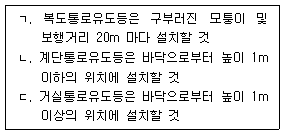
- ㄱ, ㄴ
- ㄱ, ㄷ
- ㄴ, ㄷ
- ㄱ, ㄴ, ㄷ
(정답률: 52%)
118. 비상조명등의 화재안전기준에 관한 설명으로 옳은 것은?
- 의료시설의 거실에는 비상조명등을 설치하지 아니한다.
- 휴대용비상조명등의 설치높이는 바닥으로부터 0.5m 이상 1.0m 이하의 높이에 설치 하여야 한다.
- 거실의 각 부분으로부터 하나의 출입구에 이르는 수평거리가 15m 이내인 부분에는 비상조명등을 설치하지 아니한다.
- 지하층을 포함한 층수가 11층 이상의 층은 비상조명등을 60분 이상 유효하게 작동시킬수 있는 용량으로 하여야 한다.
(정답률: 36%)
119. 제연설비의 화재안전기준에 관한 설명으로 옳은 것은?
- 하나의 제연구역은 직경 40m 원내에 들어갈 수 있어야 한다.
- 제연경계의 수직거리는 2.5m 이내이어야 한다.
- 거실과 통로(복도를 제외)는 상호 제연구획 하여야 한다.
- 예상제연구역의 각 부분으로부터 하나의 배출구까지의 수평거리는 10m 이내가 되도록 하여야 한다.
(정답률: 27%)
120. 제연설비의 화재안전기준상 거실의 바닥면적이 100m2인 예상제연구역이 다른거실의 피난을 위한 경유거실인 경우 그 예상제연구역의 최소배출량(m3/hr)은?
- 5,000
- 6,500
- 7,500
- 9,000
(정답률: 39%)
121. 지표면에서 최상층 방수구의 높이가 70m 이상인 특정소방대상물에 설치하는 연결송수관설비의 가압송수장치에 관한 화재안전기준으로 옳은 것은?
- 충압펌프가 기동이 된 경우에는 자동으로 정지되지 아니하도록 하여야 한다.
- 펌프의 토출량은 계단식 아파트의 경우에는 1,200/min 이상이 되는 것으로 하여야 한다.
- 펌프의 양정은 최상층에 설치된 노즐선단의 압력이 0.25 MPa 이상의 압력이 되도록하여야 한다.
- 펌프의 토출측에는 압력계를 체크밸브 이후에 펌프토출측 플랜지에서 가까운 곳에 설치하여야 한다.
(정답률: 38%)
122. 연결살수설비에서 패쇄형스프링클러헤드를 설치하는 경우 화재안전기준으로 옳은 것은?
- 스프링클러헤드와 그 부착면과의 거리는 55cm 이하로 하여야 한다.
- 높이가 4m 이상인 공장에 설치하는 스프링클러헤드는 그 설치장소의 평상시 최고 주위온도에 관계없이 표시온도 106℃ 이상의 것으로 할 수 있다.
- 습식 연결살수설비외의 설비에는 상향식스프링클러헤드를 설치하여야 한다.
- 스프링클러헤드의 반사판은 그 부착면과 10분의 1 이상 경사되지 않게 설치하여야 한다.
(정답률: 36%)
123. 비상콘센트설비의 화재안전기준상 전원회로 설치기준으로 옳지 않은 것은?
- 하나의 전용회로에 설치하는 비상콘센트는 10개 이하로 할 것
- 콘센트마다 플러그접속 차단기를 설치하여야 하며, 충전부가 노출되지 아니하도록 할 것
- 전원으로부터 각 층의 비상콘센트에 분기되는 경우에는 분기배선용 차단기를 보호함 안에 설치할 것
- 비상콘센트설비의 전원회로는 단상교류 220V인 것으로서, 그 공급용량은 1.5 kVA이상인 것으로 할 것
(정답률: 47%)
124. 무선통신보조설비의 화재안전기준에 관한 설명으로 옳은 것은?
- 동축케이블의 임피던스는 45Ω으로 설치하여야 한다.
- 증폭기의 전면에는 주 회로의 전원이 정상인지의 여부를 표시할 수 있는 표시등 및 전류계를 설치하여야 한다.
- 지상에 설치하는 접속단자는 보행거리 300m 이내마다 설치하고, 다른 용도로 사용되는 접속단자에서 1.5m 이상의 거리를 두어야 한다.
- “분배기”란 신호의 전송로가 분기되는 장소에 설치하는 것으로 임피던스 매칭과 신호균등분배를 위해 사용하는 장치를 말한다.
(정답률: 45%)
125. 연소방지설비의 화재안전기준에 관한 설명으로 옳지 않은 것은?
- 연소방지설비는 송수구로부터 3m 이내에 살수구역 안내표지를 설치할 것
- 방화벽을 관통하는 케이블ㆍ전선 등에는 내화성이 있는 화재차단재로 마감할 것
- 연소방지설비의 배관방식은 습식외의 방식으로 설치할 것
- 방수헤드간의 수평거리는 연소방지설비 전용헤드의 경우에는 2m 이하로 할 것
(정답률: 33%)
12vol% x 1.8vol% = 0.216vol%
따라서, 혼합기체의 폭발 하한계는 0.216vol% 이다. 하지만, 이 값은 부탄의 폭발 하한계만 고려한 값이므로, 다른 가스들의 폭발 하한계도 고려해야 한다. 따라서, 각 가스의 부피 비율을 곱해준 후 더해준다.
메탄: 3vol% x 5vol% = 0.15vol%
프로판: 35vol% x 2vol% = 0.7vol%
부탄: 12vol% x 1.8vol% = 0.216vol%
공기: 50vol%
0.15vol% + 0.7vol% + 0.216vol% + 50vol% = 50.066vol%
따라서, 혼합기체의 폭발 하한계는 50.066vol% 이다. 이 값에서 공기의 부피 비율을 빼주면, 혼합기체의 다른 가스들의 부피 비율만을 고려한 값이 된다.
50.066vol% - 50vol% = 0.066vol%
따라서, 혼합기체의 다른 가스들의 부피 비율만을 고려한 폭발 하한계는 0.066vol% 이다. 이 값을 소수점 둘째자리까지 반올림하면 2.02 이므로, 정답은 "2.02" 이다.